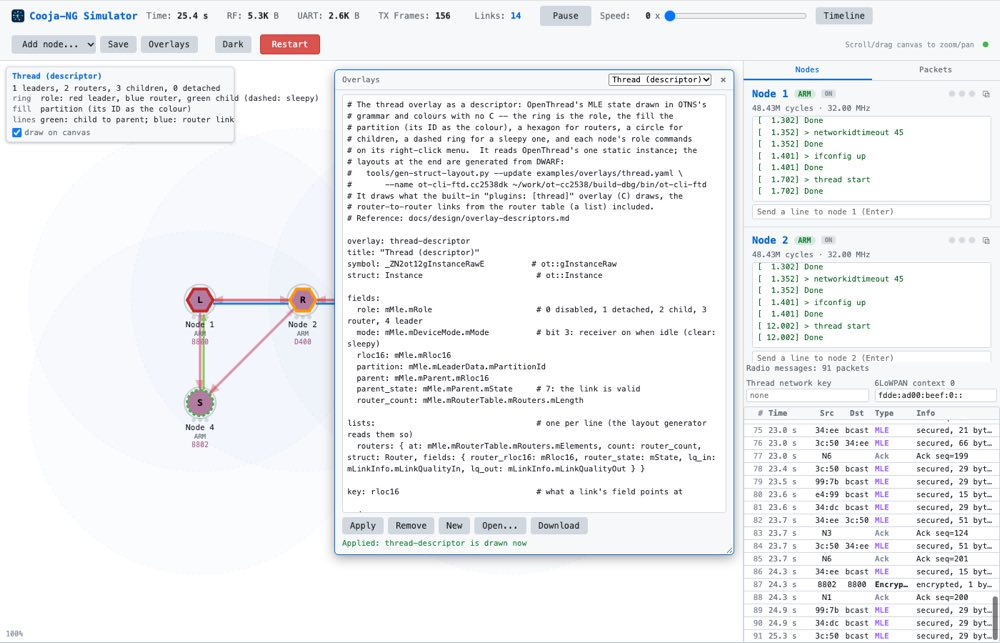

See the network: an overlay you edit while it runs
The canvas shows the Thread network itself, as OpenThread's own simulator does: leader, routers and a sleepy child, each partition its own colour, read from every node's memory. What it draws is a YAML file, not code: open Overlays in the live run, change a colour, a label or a rule, press Apply, and the picture changes. Right-click a node to make it the leader. At 60 s half the network walks out of range and forms its own partition; at 150 s it comes back and the two merge.